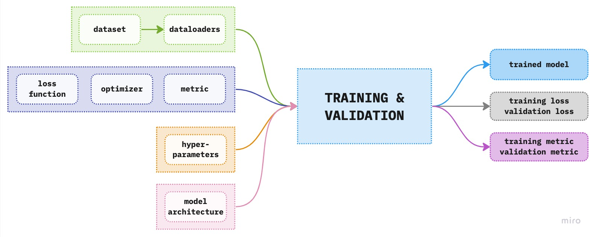
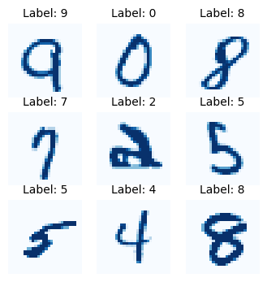
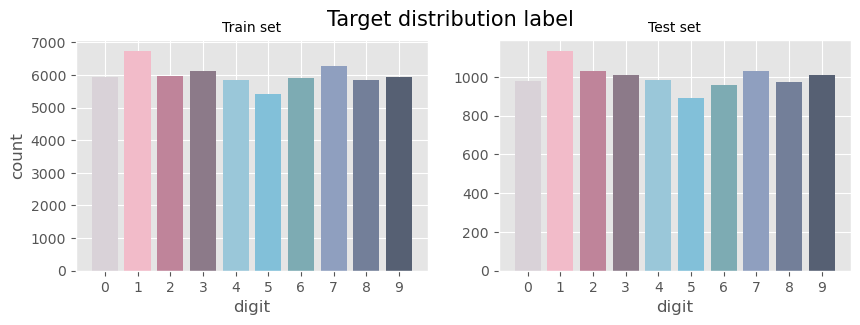
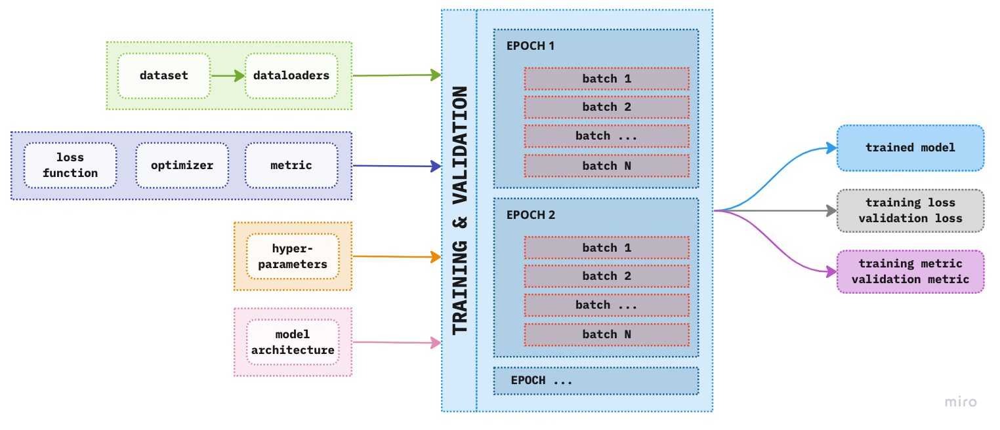
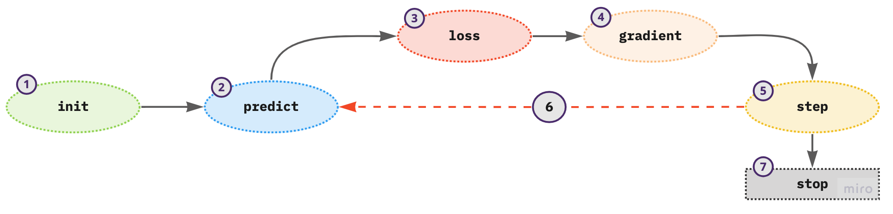
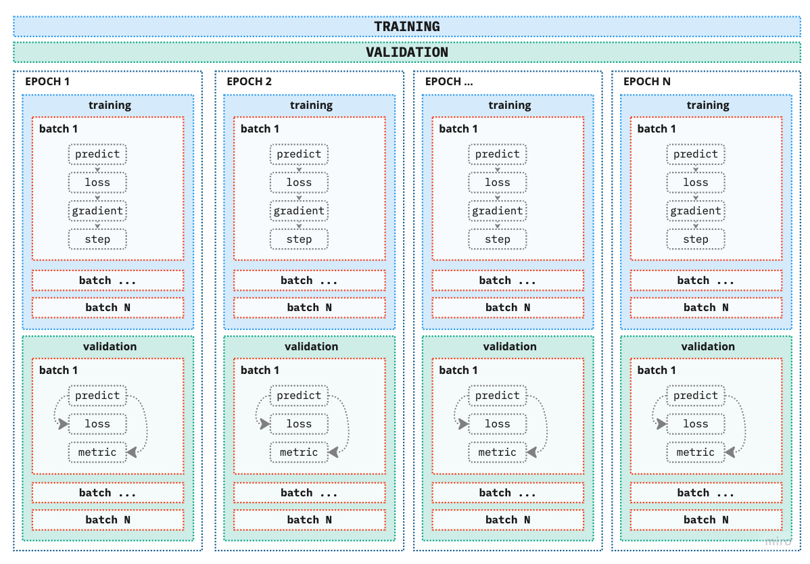
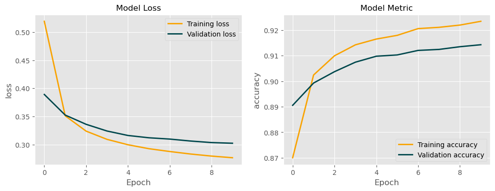

Explainer: Building A Modeling Pipeline in PyTorch
Step-by-Step Guide to Building A Modeling Pipeline in PyTorch
deep learning
pytorch
Author
Ita Ćirović Donev
Published
April 3, 2023
This notebook follows a step-by-step process of training a neural network in PyTorch. The objective is on learning the main processes and steps in constructing the modeling pipeline. We will consider a computer vision classification problem, i.e. using a deep learning model to classify images in predefined categories.
When building a deep learning model there are five main things you should consider, namely: - data availability and structure: construct a dataloader for each dataset - model architecture: define a model class - define a modeling pipeline with: - hyperparameters - loss function and the optimizers - model metrics
Consider the following figure below where the central point is the training and validation box to which we feed the information from our data, the model architecture, etc. to obtain the trained model with its results in the form of a model loss and metrics. This trained model, we can then use to further analyze the resutls on the test set and if all goes well, implement it in production.
 Figure 1. Overview of the components of deep learning modeling pipeline
Since this is our first step in training a neural network in PyTorch we will focus on constructing the modeling pipeline, i.e. the training and validation box in the above figure, which we can then use in other more complex problems. For this reason we will use the MNIST dataset provided in PyTorch. In the next notebook, we will explore further by using a more complex dataset to demonstrate the importance of constructing a custom dataset and related topics.
Code
%matplotlib inlineimport matplotlib.pyplot as pltimport matplotlib.colors as mcolorsimport matplotlib.cm as cmimport seaborn as snsfrom pathlib import Pathfrom termcolor import coloredimport nbdevimport numpy as npimport pandas as pd# PyTorchimport torchimport torch.nn as nnimport torch.nn.functional as Fimport torch.optim as optimfrom torchvision import datasets, transformsfrom torch.utils.data import DataLoaderfrom torchvision.transforms import ToTensorfrom torch.utils.data import SubsetRandomSampler
After imports we define plot style and global variables. The purpose of global variables are such that they don’t change during the course of the notebook, which is why we define them at the beginning of the notebook.
# Plotting styleplt.style.use('ggplot')# Global variablesDATA_DIR = Path('/kaggle/working/data/')MODELS_DIR = Path('/kaggle/working/models/')MODELS_DIR.mkdir(parents=True, exist_ok=True)SEED =42# Define custom colors for the labelscolors = ["#D9D2D8","#F2BBC9", "#BF849A", "#8C7A89", "#9AC7D9", "#82C0D9", "#7DABB3", "#8F9FBF", "#737F99", "#566073"]cmap = mcolors.ListedColormap(colors)
Datasets and Dataloaders
To train any machine learning model we first need data. For this project we will use the famous MNIST dataset comprised of images of digits from 0 to 9. Our task is to predict the digit based on the image provided. The dataset is already included in the dataset module of torchvision library. The dataset module provides a collection of datasets. For further information see this link.
To download the dataset we need to provide at least the following arguments: - root: specifies where to save the downloaded files, - train: specifies whether to download the train set (True) or the test set (False); and - download: specifies whether to download the dataset. Note that if the data already exists locally in the provided root argument, the data will not be downloaded again.
It is worth noting that the downloaded dataset will be processed as a PyTorch DataSet. This will enable easy loading of input data into the training and validaiton pipeline.
To download the datasets and save both to DATA_DIR directory we can use the following code:
There are additional arguments such as transform which transforms the data. To illustrate each step separately we will use this option later on.
We can check how many images are in the training and test set using len. To obtain more information about the structure of each image we can use .data.shape which gives us the number of images and the size of each image, i.e. height and width.
So in total there are 70000 images of handrwitten digits, where each is of size 28 by 28 pixels. Since the data is processed as a PyTorch dataset we know that each element of data_train is a tuple of inputs (images) and labels. To check the type of the input data we can use type() as shown below:
img, label = data_train[0]print(type(img))
<class 'PIL.Image.Image'>
Since we haven’t applied any transformations on the images, the data types of our input data is still a PIL image. Note that a computer can not take an image as an input data point of this form. We will have to transform it into numbers, i.e. tensors. Before we go and do this let’s see how some of the images look like along with their corresponding target label. Below we define a simple plotting function which takes 9 random images from the training data and plots them using the blue gradient color.
Note
Note that if we had transformed the images into tensors we would have shape of [1,28,28] for one image. In order to use the below function we need to change line plt.imshow(img, cmap='Blues') to plt.imshow(img.squeeze(), cmap='Blues'). The method squeeze() removes any dimension of 1.
Code
def show_sample(data):"""Ref: https://pytorch.org/tutorials/beginner/basics/data_tutorial.html""" fig = plt.figure(figsize=(4,4)) cols, rows =3,3for i inrange(1, cols*rows+1): sample_idx = torch.randint(len(data), size=(1,)).item()# Get image and the corresponding label img, label = data[sample_idx] fig.add_subplot(rows,cols,i) plt.imshow(img, cmap='Blues') plt.title(f'Label: {label}', size=10) plt.axis("off") plt.show()
show_sample(data_train)

Each of the images is composed of pixels ranging from 0 to 255, where 0 represents white and 255 black. Let’s transform the image to tensors and visualize it. We will apply ToTensor() which transforms the pixel values to the values in range of (0,1).
# Extract the first image and its label from the datasetimgT = ToTensor()(img)print(f'Image dimension: {imgT.shape}')print(f'Label: {label}')
Image dimension: torch.Size([1, 28, 28])
Label: 5
So the image size is 28 by 28 pixels and the first image should represent digit 5. Let’s see the pixel data with gradient colors for better visualization. We will use pandas style to apply the gradient effect. Since our image is of rank 3 in order to convert it to a pandas dataframe we need to remove the first dimension. We will do this using the numpysqueeze() which removes axes of length 1. Below image gives us the normalized pixel representation of the first digit image in the training sample. The label for this image is 5.
Previously we have downloaded two datasets: training and testing. To be able to deduce whether our model is overfitting during training we need another dataset, namely, validation set. The validation set will show us how our model performs on out-of-sample data, i.e. data that have not been used in training.
We will generate the validation dataset by randomly sampling from the training dataset since it is much bigger than the given test set, naturally.
For this problem, we can assume that the images in the dataset are independent and don’t have any underlying relationship structure, like time. If this is not the case we should think about the underlying structure when splitting the dataset (more on this in later notebooks). The main aspect we should worry about is the distribution of digits in all datasets. Ideally, we want the digits to be distributed in the same way in all datasets, so when creating the dataset for validation we should keep this in mind.
For example, we may encounter two types of imbalance: training imbalance and testing imbalance. In training imbalance, the classes represented are not uniformly distributed, i.e. there is a significant perentage of one or several classes compared to the rest of the classes in the dataset. On the other hand, testing imbalance refers to the imbalance between training and testing dataset. For example, if we would have a training set with an extremly small number of say digits 3 but a large sample of digits 3 in the test set then the model has a very limited information scope to learn from, but it is expected to know 3s very well in out-of-sample settings. You can notice that in this case there is most probably evidence of both imbalance problems.
To begin, it is usefull to know how the labels are named. We can use class_to_idx to get the dictionary of labels in our dataset.
# Get mapping of target IDsprint(data_train.class_to_idx)
To check the distributions of labels in our training and testing dataset visually we compute a bar plot of each:
Code
# Create dataframe for each datasetdf = pd.DataFrame(pd.Series(data_train.targets).value_counts().reset_index())df.columns = ['digit', 'count']df.sort_values('digit', inplace=True)dft = pd.DataFrame(pd.Series(data_test.targets).value_counts().reset_index())dft.columns = ['digit', 'count']dft.sort_values('digit', inplace=True)# Define plot structurefig,_=plt.subplots(1,2, figsize=(10,3))plt.suptitle('Target distribution label', size=15)# Plot the train setplt.subplot(1,2,1)plt.bar('digit', 'count',data=df, color=cmap(df.digit))plt.title('Train set', size=10)plt.xlabel('digit')plt.xticks(range(len(df.digit)), df.digit)plt.ylabel('count')# Plot the test setplt.subplot(1,2,2)plt.bar('digit', 'count',data=dft, color=cmap(dft.digit))plt.title('Test set', size=10)plt.xlabel('digit')plt.xticks(range(len(dft.digit)), dft.digit)plt.show()

We can see from above figures that the target distributions for both training and test sets are similar and all digits are represented relatively in a balanced structure, which means we can just split the training data randomly into training and validation sets. As noted previously if the sample is not balanced then when splitting the sample we should preserve the sample imblance.
We will use SubsetRandomSampler to select the data. The SubsetRandomSampler uses indices from the original dataset to randomly and without replacement select subsets of data. So, first we need to define which indices are for the training sample and which are to be used for the validation sample. Generally, if there is no underlying structure in the data, i.e. the samples are independent, it is good practice to shuffle the data before selecting the indices. This ensures that we will have samples from the complete set of data. Note that the function SubsetRandomSampler selects random indices from the given list, however, we need to first define from which list to select these samples from.
We will construct the training set to be 70% of the indices of the original downloaded training dataset. The remaining 30% will be allocated to validation dataset. The steps are:
# Step 1 - Length of train dataset from which we are splitting the dataNd =len(data_train);print(f'Dataset length: {Nd}')# Step 2 - Create a shuffled list of training indices to ensure# there are indices from the complete set in the final selectionNd_idx =list(range(Nd))np.random.shuffle(Nd_idx)print(f'Shuffled indices {Nd_idx[:5]}')# Step 3 - Define percentage of indices for the training sample# to compute number of indices to be included in the training sampletrain_pct =0.7Nt =int(np.floor(train_pct * Nd))print(f'Number of indices to include in training set: {Nt}')# Step 4 - Split the indices into training and validationtr_idx, vl_idx = Nd_idx[:Nt], Nd_idx[Nt:]# Pass the indices to the SubsetRandomSamplertr_sampler = SubsetRandomSampler(tr_idx)vl_sampler = SubsetRandomSampler(vl_idx)print(f'\nTrain idx length: {len(tr_sampler)}')print(list(tr_sampler)[:5])print(f'\nValid idx length: {len(vl_sampler)}')print(list(vl_sampler)[:5])
Dataset length: 60000
Shuffled indices [8939, 47442, 57909, 43484, 27583]
Number of indices to include in training set: 42000
Train idx length: 42000
[16519, 23559, 32979, 55729, 15783]
Valid idx length: 18000
[32198, 34233, 43322, 23625, 1148]
Now, that we have the samplers for training and validation, we can create iterable objects for each dataset which will contain all the information used in the training process with respect to the input data. These objects are called dataloaders.
In order to train the model using PyTorch there are two basic requirements in regards to the input data: 1. the dataset has to be in the form of a tuple with the structure (input, label) where each is a tensor 2. the input data should be stored in batches, i.e. the input data is iterable over batches.
Note that the initial data is already in form of tuples, as we saw previously. To create the iterable batches we will use a PyTorch object called DataLoader which takes a Python collection and converts it to an iterator based on batches. From the PyTorch documentation we have:
Data loader. Combines a dataset and a sampler, and provides an iterable over the given dataset. Ref
Since we have datasets and the corresponding samplers we can proceed to create dataloaders, but before actually constructing dataloaders let’s check what we have got in training and validation datasets. We also need to check whether there are any partial batches, i.e. leftover samples when constructing mini-batches. Note that there is an option in DataLoader called drop_last to drop any such letfovers. In the function below we are computing, based on our defined samplers, how many batches we should expect from the datasets and whether there are letfover samples, i.e. incomplete batches.
# Define number of batchesno_batches =64
def check_batches(sampler, batch_size):# Number of samples to expect in the final dataloader no_samples =len(sampler)# Number of batches to expect in the final dataloader no_batches =int(np.ceil(no_samples / batch_size))print(f'Number of batches total: {no_batches}')# Samples in the last batch (leftover samples) lb_samples = no_samples % batch_sizeif lb_samples !=0: no_batches -=1print(f'Full batches: {no_batches}')if lb_samples !=0:print(f'Samples in partial batch: {lb_samples}')return no_batches, lb_samples
We can apply the above function on training and validation sample:
Training sample
Number of batches total: 657
Full batches: 656
Samples in partial batch: 16
Validation sample
Number of batches total: 282
Full batches: 281
Samples in partial batch: 16
Now, let’s finally create dataloaders. Note that we can not use shuffle=True when using SubsetRandomSampler() by construction.
To check the size of the dataloader we can use len() which will give us the number of batches created for each dataset. The numbers for the batches from the dataloaders align with what we have calculated from the samplers.
Training batches: 657
Validation batches: 282
Test batches: 157
Note
Since we have constructed training and validation dataloaders from the original dataset using sampler, if we call len(dl_train.dataset) it will give us the number of samples of the original dataset, i.e. 60000, and not 42000 and 18000 respectively. We will see how this applies later on in the code when we will compute the average loss and metric for the epoch of training.
for batch in dl_train: X, y = batchprint(f'X shape: {X.shape}')print(f'y shape: {y.shape}')break
X shape: torch.Size([64, 1, 28, 28])
y shape: torch.Size([64])
So, everything looks good, we have batches with the correct number of samples and the shapes of each sample is 28 by 28 with 1 channel since the images were given in gray scale and not in RGB (then we would have 3 channels instead of 1).
Training Pipeline
Now that we have our dataloaders ready we can go to the next step and define the components of the training pipeline. From Figure 1. we can see that the main components of the training pipeline are: the loss function, optimizer, metric, hyperparameters and the model architecture. We can now extend that figure to include more details on the training and validation phase
 Figure 1. Extended overview of the components of deep learning modeling pipeline
Let’s see briefly what each component is and why is needed.
The Loss Function
Loss function provides the connection between our model predictions and the ground truth (the target labels) in form of a measure, which tells us how far our model predictions are from the target labels. It serves as a means to verify if our optimization process of the weights is progressing as intended, i.e. our model is making better (more correct) predictions as we iterate the learning process.
The loss function needs to have certain properties to be useful in model training: 1. differentiable - if the loss function is not differentiable there are no gradients which would update the weights, without updating the weights there can be no change in the model predictions 2. sensitive - responds to small changes in weights which in turn means that it will change the prediction value. If there is no change in the prediction value the training iteration is useless. 3. It can be the same as model metric only if it satisfies the first 2 properties. For example, accuracy is a common metric (we will use it in this project) however, it is not suitable as a loss function since it is not differentiable and it does not possess the properties of sensitivity.
In this project the problem is of multi-class classification, and we should choose the loss function which will satisfy the above properties and provide us with the probabilities for each underlying class of labels. In most cases, cross entropy loss function is used.
Cross-entropy loss function is made of two components: 1. the softmax activation function, and - provides prediction probabilities for each class which sum to 1 2. the negative log likelihood - since we are transforming the values from (0,1) by means of taking the log the output range is then (log(0), log(1)) = (-inf, 0) and we need to multiply with (-1) to get the positive loss values.
The cross-entropy loss is defined in PyTorch as follows:
# Instantiate the loss functionloss_fun = nn.CrossEntropyLoss()# Compute the lossloss = loss_fun(inputs, labels)
Optimizer
The loss function gave us the information how far our model’s outputs are from the labels. The next step is to try to minimize this loss, by adjusting the model parameters, for which we need two things: the direction to the potential minimum loss and the path to get there. The direction is given by the gradient of the loss function with respect to the parameters, while the path is given by the optimizer. The speed at which we would like to trod along this path is provided by the hyperparameter called learning rate (more on this in the next notebooks).
Optimizer is
In the figure below the process of optimizing model parameters is given:
 Figure 2. Process of updating the model parameters
initialize the weights - use random values
for each training sample in a mini-batch use the weights to compute the prediction
given the calculated predictions compute the model loss on the mini-batch
calculate the gradients of the loss with respect to weight parameters - tells us the direction of the loss for one unit change in the parameters
update the weights according to step (4)
repeat the steps from (2) to (5)
iterate until the model loss is low enough and the model is not overfitting or there is a time constraint
There are many optimizers to choose from like gradient descent (GD), stochastic gradient descent (SGD), Adagrad, RMSprop, Adam, etc. where GD and SGD is the first one you will most likely encounter in stuidying deep learning. For the purposes of this notebook we will use SGD and not dwelve into the details of a particular optimizers, this we leave for future notebook explainers. In PyTorch we can define it as follows:
The main goal of a machine learning model is to generalize well on unseen data. To assess whether we have achieved this we need an independent view of our model performance. Computing the model metric on the out-of-sample (validation dataset) provides us with such information.
During training the weights are updated using the training datset given the loss function, gradients and the optimizer. So in essence, we use training set to update (iteratively) the weights and the validation set to assess model generalization.
Model metric is given in terms of explainability of the model performance given the project goals. The metric needs to be “human understandable” while the loss function needs to be suitable mathematically for the optimization process (SGD).
There may be cases where the loss function and metric are equally defined.
In this project, we want to see how many images are classified correctly so we can use a simple accuracy metric to acomplish this objective. There is no direct function in PyTorch for accuracy, so we define it directly within the training process with the following steps: 1. convert from model outputs to class labels by selecting the class with the highest output 2. compare model class output to labels and sum the correct predictions 3. divide the sum of correct predictions with the total number of samples
Hyperparameters
Hyperparameters are parameters that are defined before we start training and do not change during training, i.e. they are the parameters that are not updated. They should not be confused with weights and biases, which are trainable model parameters and are updated, i.e. optimized during training.
Examples of hyperparameters include: - batch size - number of epochs - learning rate - regularization - weight initialization
For this project, we will define the first three hyperparameters. The batch size we have already considered when defining the dataloaders, while the number of epochs and the learning rate is defined prior to training.
Note that as you change any of the hyperparameters the results of your deep learning model will change. For example, changing the learning rate has a direct effect on how fast the model converges (or doesn’t) to a solution (it might not be optimal). Finding the best hyperparameters for your project is one of the key components of deep learning, i.e. achieving optimal performance on a given task.
Since this is a first introductory notebook we will use only one value for the batch size, number of epochs, and learning rate. In later notebooks, we will explore the effects of the hyperparamters on the model results.
Model Architecture
Model architecture provides the functional form of the model. It specifies how the input samples are passed through the collection of mathematical functions to obtain the final prediction value. Model architecture is comprised of layers, namely the input layer, hidden layers and the output layer. It is the stucture of the hidden layers that leads to deep networks, i.e. the more hidden layers the deeper the network. Model architecture, as you could imagine, has a direct impact on the performance of our model. With bigger (deeper) architecture we can expect better model performance, however with some cavetas. We can explore these in the future notebooks. For now we will consider a simple linear neural network to illustrate the process of defining the model architecture. As mentioned earlier, the goal of this notebook is not to train the best possible model, but to explain the modeling pipeline, which can then be tuned to develop a much better performing model.
A simple neural network with linear layers will provide a fast baseline to check that our modeling pipeline works. So first, we define the class for model architecture by inheriting from the PyTorch nn.Module, which is the base class for all neural network models.
Within our model class we need to define the required __init__ and forward methods. In order to invoke thenn.Module we need to add super().__init__() within the __init__() method. This ensures that SimpleLNN inherits all the basic functionality of nn.Module and it first executes the code in the parent’s class i.e. in nn.Module. The forward method defines how the data will pass through the defined network.
Let’s define the class SimpleLNN:
class SimpleLNN(nn.Module):""" A simple linear neural network with 2 linear layers and an output layer with softmax activation function. in_shape (tuple): (height, width) n_out (int): number of outputs of the model """def__init__(self, in_shape:tuple, n_out:int):super().__init__() torch.manual_seed(1) np.random.seed(1)self.in_shape = in_shape H, W =self.in_shapeself.n_out = n_outself.flatten = nn.Flatten()self.linear = nn.Linear(H*W, self.n_out)def forward(self, x): x =self.flatten(x) x =self.linear(x)return x
Given our simple neural network let’s see how many parameters we have to train per each layer. We define a simple function ourselves as follows:
def cnt_params(model, show_per_layer:bool=True):""" Get the number of model parameters for the instantiated model class. If show_per_layer then print info for each layer. """if show_per_layer:print('-'*75)print(f'PARAMETER INFORMATION PER LAYER')print('•'*75)for name, param in model.named_parameters():if param.ndim <2: in_fts = param.ndimelse: in_fts = param.shape[1] out_fts = param.shape[0]print(f"Layer: {name} | In Params: {in_fts} | Out Params: {out_fts} | Total Params: {in_fts*out_fts}") total_cnt_params =sum([x.reshape(-1).shape[0] for x in model.parameters()])print('-'*75)print(f'Total number of parameter: {total_cnt_params}')print('-'*75)return total_cnt_params
model = SimpleLNN((28,28), 10)_ = cnt_params(model)
---------------------------------------------------------------------------
PARAMETER INFORMATION PER LAYER
•••••••••••••••••••••••••••••••••••••••••••••••••••••••••••••••••••••••••••
Layer: linear.weight | In Params: 784 | Out Params: 10 | Total Params: 7840
Layer: linear.bias | In Params: 1 | Out Params: 10 | Total Params: 10
---------------------------------------------------------------------------
Total number of parameter: 7850
---------------------------------------------------------------------------
Training and Validation Pipeline
Now that we have all the components for the modeling pipeline we can go step further and define the training and validation pipeline. To illustrate the process please refer to the image below:
 Figure 4. Training and validation pipeline
As you can notice we have expanded the training and validation box from previous figures to include blocks called batches and epochs.
Batch - We have encountered batches when we createed dataloaders. As mentioned previously, number of batches can be considered as a hyperparameter, which depends on the underlying project of course. There are two extremes: - 1 sample - Using only one sample would be super fast, however, we would also put all our eggs in one basket by “optimizing” (if this word can even be used here) our model based on only that one sample (surely all samples are not exactly the same). - all samples - On the other hand using all samples will provide us with the most information on how to update the weights however at the negative side of computer and time efficiency. So we need a [[goldilocks mini-batch]] zone. Finding this goldilocks zone is why this is also considered a hyperparameter, we adjust it according to the need of our model and project.
In later notebooks where we explain how to define a custom dataset and demonstrate different aspects of batch value on the model results.
Epoch is one full iteration of the model, i.e. the model has processed all the samples once. The more epochs we add to the training process the more times the model will update its parmeters and (hopefully) learn better but not memorize results.
One additional information we would need for training is on which device the model will train, CPU or GPU. Hopefully, we can utilize GPU for faster learning.
OK, so let’s define a class TrainModel, which will take the inputs, process them in batches and epochs according to our model pipeline setup to return the outputs, namely trained model and training and validation loss and accuracy. Note that for the metric we will use accuracy since we are considering a classification problem. You can make this even more general by defining a metric as an input to the TrainModel class.
class TrainModel:"""Training and validation of a simple neural network model: class which defines the model architecture dataloader_train: training data iterator in form of PyTorch dataloader class dataloader_valid: validation data iterator in form of PyTorch dataloader class no_epochs (int): number of epochs loss_fun: loss function optimizer: optimizer to be used in backpropagation lr_rate: learning rate for updating the parameters model_path_name (str): full path and name of the model verbose (bool): Print statmenents Example: # Initialize the class with arguments tm = TrainModel(model, no_epochs=10, loss_fun=nn.CrossEntropyLoss(), optimizer = torch.optim.SGD(model.parameters(), lr=lr_rate), lr_rate=0.1) # Train the model model_results = tm.train(dataloader_train, dataloader_valid) """def__init__(self, model, dataloader_train, dataloader_valid, no_epochs, loss_fun, optimizer, lr_rate, model_path_name:str, verbose:bool=None):self.model = modelself.dataloader_train = dataloader_trainself.dataloader_valid = dataloader_validself.no_epochs = no_epochsself.loss_fun = loss_funself.optimizer = optimizerself.lr_rate = lr_rateself.model_path_name = model_path_nameself.verbose = verbosedef check_device(self): device ="cuda"if torch.cuda.is_available() else"cpu"ifself.verbose:print(f'Using {device} device!')return devicedef train_epoch(self):"""Training step for one epoch dataloader_train: training dataloader """# Get the device for training device =self.check_device() # Define where to save training results loss_train =0 accuracy_train =0 no_correct =0 no_samples =0# Initialize training mode model.train()# Loop through the batches in the dataloaderfor batch, (X,y) inenumerate(self.dataloader_train):# --- FORWARD PASS ---# Input data sent to device X, y = X.to(device), y.to(device) no_samples += X.size(0)# Model output - probability outputs =self.model(X)# Model prediction - class _,preds = torch.max(outputs.data,1)# Model loss & accuracy loss =self.loss_fun(outputs, y)# Sum of correct predictions correct_preds = (preds == y).sum().item() no_correct += correct_preds# --- BACKPROPAGATION ---# Clear the gradientsself.optimizer.zero_grad()# Compute the gradients loss.backward()# Update the parametersself.optimizer.step()# --- SAVE & PRINT RESULTS ---# Save results of every batch loss_train += loss.item()*y.size(0) accuracy_train += correct_preds# Average the results loss_train /= no_samples accuracy_train /= no_samplesprint(colored(f'TrLoss: {loss_train} TrAccuracy:[{no_correct}/{no_samples}] {accuracy_train}', 'blue'))returnself.model, loss_train, accuracy_traindef validate_epoch(self):"""Validate the trained model for the epoch dataloader_valid: validation dataloader """# Get the device for training device =self.check_device()# Define where to save training results loss_valid =0 accuracy_valid =0 no_samples =0 no_correct =0# Set the evaluation mode model.eval()with torch.no_grad():for batch, (Xv,yv) inenumerate(self.dataloader_valid): # Input data sent to device Xv, yv = Xv.to(device), yv.to(device) no_samples += Xv.size(0)# Model output - probability outputs =self.model(Xv)# Model prediction - class _,preds = torch.max(outputs.data,1)# Model loss & accuracy loss =self.loss_fun(outputs, yv) correct_preds = (preds == yv).sum().item() no_correct += correct_preds# --- SAVE & PRINT RESULTS ---# Save results of every batch loss_valid += loss.item()*y.size(0) accuracy_valid += correct_preds# Average the results loss_valid /= no_samples accuracy_valid /= no_samplesprint(colored(f'VlLoss: {loss_valid} VlAccuracy:[{no_correct}/{no_samples}] {accuracy_valid}','red'))return loss_valid, accuracy_validdef train(self):"""Training the model for N epochs"""# Initialize for results loss_train_epoch = [0]*self.no_epochs accuracy_train_epoch = [0]*self.no_epochs loss_valid_epoch = [0]*self.no_epochs accuracy_valid_epoch = [0]*self.no_epochsfor epoch inrange(self.no_epochs):print(f'EPOCH: {epoch+1}')print('.'*75) model, loss_train, accuracy_train =self.train_epoch() loss_valid, accuracy_valid =self.validate_epoch()# Save results loss_train_epoch[epoch] = loss_train accuracy_train_epoch[epoch] = accuracy_train loss_valid_epoch[epoch] = loss_valid accuracy_valid_epoch[epoch] = accuracy_validprint('-'*75)# Save model resultsifself.model_path_name: torch.save(model, self.model_path_name)print(colored(f'Model saved in {self.model_path_name}','blue'))return loss_train_epoch, loss_valid_epoch, accuracy_train_epoch, accuracy_valid_epoch
Let’s quickly explain how we have defined class TrainModel. The class TrainModel is composed of three methods: train_epoch, validate_epoch and train, where train_epoch and validate_epoch provide the training and validation for one epoch, while the train method encompases both to provide the complete modeling pipeline for a specified number of epochs.
Using __init__() we define all the arguments for the class.
performs one epoch of training given the training dataloader and returns training loss and metric, which we defined to be accuracy for this project. Once we have defined the device to use for training we need to define all the objects where we will save the training results. We definitely need to see the training loss and accuracy to be able to compare with the validation results, but we also would like to print the number of correct predictions for each epoch with no_correct. In order to average the results from all the batches we need the number of samples for the complete epoch. Recall that since we have user sampler to create training and validation using simply len(dataloader_train) will give the number of samples from the original dataset. So, to get the number of samples per epoch of training we will simply add the number of samples per each batch to the object no_samples. Note that these are all defined to start at zero since we are adding a numeric value to each as we iterate through the batches.
which activates the training process, i.e. it activates some of the layers in our model and more specifically enables gradient computation.
Now we are ready to loop through the dataloader, i.e. through all the batches and compute the forward and backward pass of our neural network. The forward pass consists of the following:
# Input data sent to deviceX, y = X.to(device), y.to(device)no_samples += X.size(0)# Model output - probabilityoutputs =self.model(X)# Model prediction - class_,preds = torch.max(outputs.data,1)# Model loss & accuracyloss =self.loss_fun(outputs, y)# Sum of correct predictionscorrect_preds = (preds == y).sum().item()no_correct += correct_preds
As we iterate through the dataloader we extract the tuple of inputs, namely images (X) and labels (y) and send them to defined processor, either CPU or GPU. Also, we add the number of samples from this batch to the no_samples object. Using the model architecture defined in model we pass the input images through to obtain the prediction. In order to be able to compare model output to labels, we need to convert the predictions to class labels for which we use torch.max(outputs.data,1). It will output the index of a maximum value given the 1 dimension. Since the labels are digits from 0 to 9, if we get the index we will still get a value from 0 to 9. Note that if this is not the case you need to additional use a mapping function which defines the labels accordingly. Next, we compute model loss given out loss function. Note that we are using cross-entropy loss, which contains softmax and the negative log likelihood, which is the reason why we have not included the softmax layer in our model architecture. Finally, we compute the metric, i.e. accuracy, by simply summing the correct predictions and adding the number to no_correct for later use.
Having the loss function, we can compute the backpropagation:
# Clear the gradientsself.optimizer.zero_grad()# Compute the gradientsloss.backward()# Update the parametersself.optimizer.step()# --- SAVE & PRINT RESULTS ---# Save results of every batchloss_train += loss.item()*y.size(0)accuracy_train += correct_preds
Since the gradients accumulate as we peform multiple forward and backward passes, we need to call self.optimizer.zero_grad() to clear the accumulated gradients from the previous batch. Now it is safe to compute the gradients and call the optimizer.step() to update the weights. Remember gradients tell us how much the model loss will change for a unit change in the parameters. Lastly, we add the results of the model loss and number of correct predictions for the current batch. Note that loss.item() represent loss for the batch with the mean reduction. So in order to obtain the total loss for the batch we need to multiply with the size of the batch (number of samples) or y.size(0). You can change the behavior of this by changing the argument reduction in the CrossEntropyLoss(source).
Finally, we divide the loss and metric by the number of samples to obtain the average values of each.
Note
You might wonder why are we dividing now and before we multiplied to get the total loss. After we trained for one epoch we need an average loss over that epoch. Now, consider that not all batches have to be of the same size and hence not all losses over each batch are on the same scale as the rest of the batches. For this reason we first multiply each batch loss with its size to get the total and then it is easy to get the epoch loss by dividing with the number of samples. Note that if all the batches are of the same size (for example you might have used the argument drop_last when constructing the dataloader) then you can simply add the loss.item() and get the epoch average loss by dividing with the number of batches.
Difference between the validation and training step is that in the validation step we are only computing the forward based on the trained model in the training step; hence no need for backpropagation since we are not updating any parameters. We simply want to deduce how well our model for a given epoch is doing on unseen (during training) data. Similarly, as in train_epoch we define the device to train on and the objects to store the needed results of validation.
# Get the device for trainingdevice =self.check_device()# Define where to save training resultsloss_valid =0accuracy_valid =0no_samples =0no_correct =0
We set the model to evaluation mode with
model.eval()
which tells the model to use the model architecture with the parameters, rather than activating layers for the calculation. Additionally, computation of gradients is disabled. Additionaly, to ensure no gradients are computed, the for loop over dataloader is inserted withint the torch.no_grad() which basically sets requires_grad of all tensors t False.
with torch.no_grad():for batch, (Xv,yv) inenumerate(self.dataloader_valid):
the rest of the computation for each bach comprises of a forward pass which is the same as in training, but now we are using a different dataset and no updates to the parameters is done. We simply want the loss and metric for each batch.
train()
The method train() encompases the previous two functions to finally create a training and validation loop. We loop through the number of epochs defined and store results for each epoch to be used later. ***
Train the Model
To train the model we need the following: - instantiate the model class and send it to device - define the hyperparameters - instantiate the modeling pipeline with the neccessary arguments - call the method train() to start training and validation
device ="cuda"if torch.cuda.is_available() else"cpu"# Instantiate the model architecturemodel = SimpleLNN(in_shape=(28,28), n_out=10)# Define the hyperparametersno_epochs =10loss_fun = nn.CrossEntropyLoss()lr_rate =0.1optimizer = torch.optim.SGD(model.parameters(), lr=lr_rate)# Instantiate the modeling pipeline and call the `train()` methodmodel_path_name = MODELS_DIR/'basic_model.pt'tm = TrainModel(model, dl_train, dl_valid, no_epochs, loss_fun, optimizer, lr_rate, model_path_name)model_hist = tm.train()
It would be nice to visually see the results of our training and validation. Let’s create a simple plot of loss and metric for our model:
Code
# loss_train_epoch, loss_valid_epoch, accuracy_train_epoch, accuracy_valid_epochmodel_results_colors = ['#F9A302', '#00474C'] # training and validation resp.def plot_training_results(model_hist:list, metric_name:str):"""Plot the model results: loss and metric model_hist: results of a trained model as a list with the following elements: training loss, validation loss, training metric, and validation metric metric_name (str): name of the metric to insert in the plot title """ plt.style.use('ggplot') figsize = (12,4) fig, ax = plt.subplots(1,2, figsize=figsize)# Model Loss plt.subplot(1,2,1) plt.title('Model Loss', size=12) plt.plot(model_hist[0], lw=2, c=model_results_colors[0], label='Training loss') plt.plot(model_hist[1], lw=2, c=model_results_colors[1], label='Validation loss') plt.xlabel('Epoch') plt.ylabel('loss') plt.legend()# Model Metric plt.subplot(1,2,2) plt.title('Model Metric', size=12) plt.plot(model_hist[2], lw=2, c=model_results_colors[0], label=f'Training {metric_name}') plt.plot(model_hist[3], lw=2, c=model_results_colors[1], label=f'Validation {metric_name}') plt.xlabel('Epoch') plt.ylabel(f'{metric_name}') plt.legend() plt.show()
plot_training_results(model_hist, 'accuracy')

Furthermore, of great interest is to analyze where our model makes the most mistakes, i.e. for which classes. We can visualize the class predictions given model outputs and the labels using the confusion matrix. We can use the final saved model and compute predictions on the validation set. Let’s define a new function for this:
Code
def plot_confusion_matrix(conf_mat):"""Plot confusion matrix from the pandas crosstab computation."""# Define custom cmap cmap_ofd = mcolors.LinearSegmentedColormap.from_list('diagonal', ['#4F4D8C','#2E4159'], N=256) cmap_d = mcolors.LinearSegmentedColormap.from_list('off diagonal', ['#F2F2F0','#5F5DA6'], N=256) plt.figure(figsize=(6,5))# Complete plot ax = sns.heatmap(conf_mat, annot=True, cmap=cmap_ofd, fmt='d', cbar=False)# Overlay the diagonal ax = sns.heatmap(conf_mat, annot=True, cmap=cmap_d, fmt='d', mask=np.eye(len(conf_mat)), cbar=False)# Place x-axis labels and ticks on top ax.xaxis.tick_top() ax.xaxis.set_label_position('top') ax.yaxis.set_label('Prediction Class')# Other styling options ax.set_yticklabels(ax.get_yticklabels(), va='center') plt.xlabel('Actual Class') plt.ylabel('Prediction Class') plt.tight_layout() plt.show()
Code
def model_confusion_matrix(model_path_name, dataloader):"""Compute model predictions on a given dataloader and plot the confusion matrix"""# Load the saved model model = torch.load(model_path_name)# Set the model into evaluation mode model.eval()# Object to save class prediction across batches preds_class = torch.empty((0,)) labels = torch.empty((0,))with torch.no_grad():for batch, (Xv,yv) inenumerate(dataloader): # Input data sent to device Xv, yv = Xv.to(device), yv.to(device)# Model output - probability outputs = model(Xv)# Model prediction - class _,preds = torch.max(outputs.data,1) preds_class = torch.cat((preds_class, preds)) labels = torch.cat((labels, yv))# ----- CONFUSION MATRIX PLOT ----- ct = pd.crosstab(preds_class.int(), labels.int(), rownames=['Prediction'], colnames=['Actual'])return preds_class, labels, ct
From the figure below we can now analyze where our model makes mistakes by comparing the predicted and actual class. It is no surprise that the largest numbers will be on the diagonal, i.e. the number of images that the model predicted correctly. All the values off the diagonal are misclassified images. Our objective is to reduce these values as much as we can.